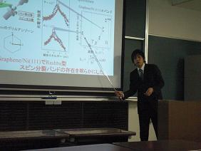
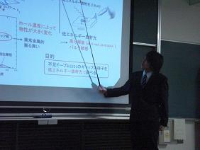
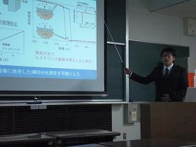

卒業研究発表会
2月16日 黒田健太、原豪太郎、古本一仁が参加した卒業研究発表会が行われました。【発表タイトル】
|  | 発表者：黒田健太 強磁性体表面上のGraphene sheetのスピン分解光電子分光 |
|  | 発表者：原豪太郎 Low-Energy Angle-Resolved Photoemission Spectroscopy of an Underdoped High-Tc Superconductor Bi2Sr1.34La0.66CuO6+δ |
|  | 発表者：古本一仁 温度・磁場可変XMCD分光システムの整備と磁性超薄膜Fe/Cu(001)の磁化曲線測定 |